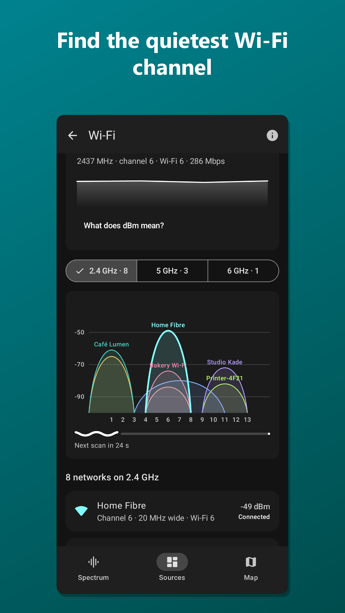
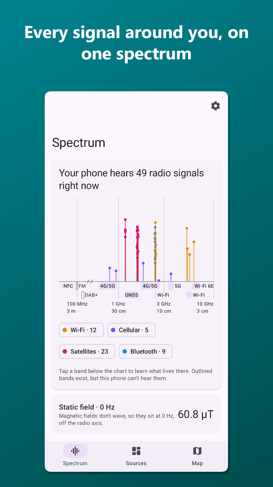
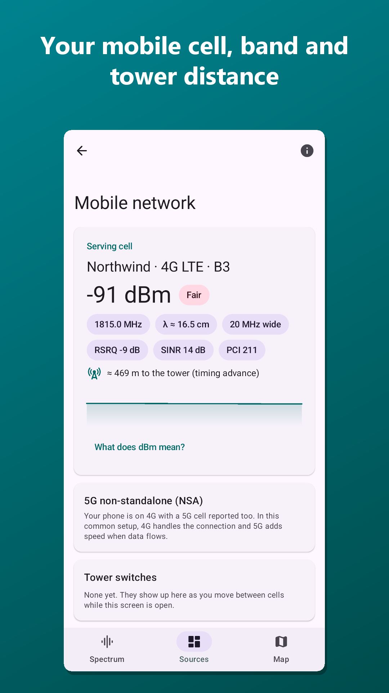
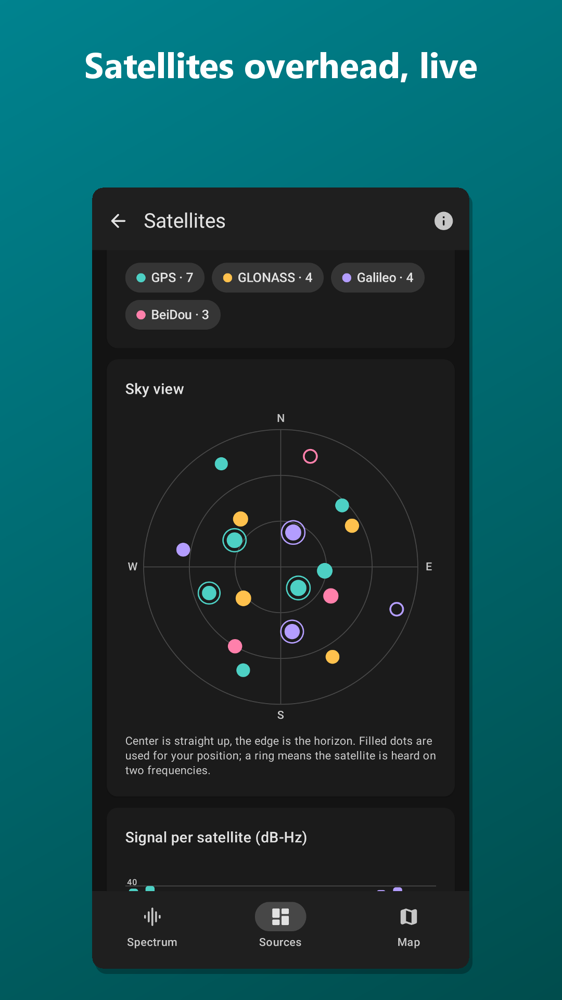
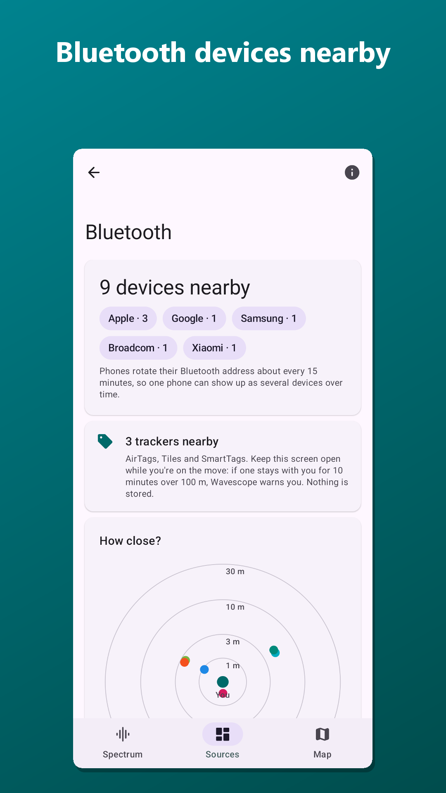
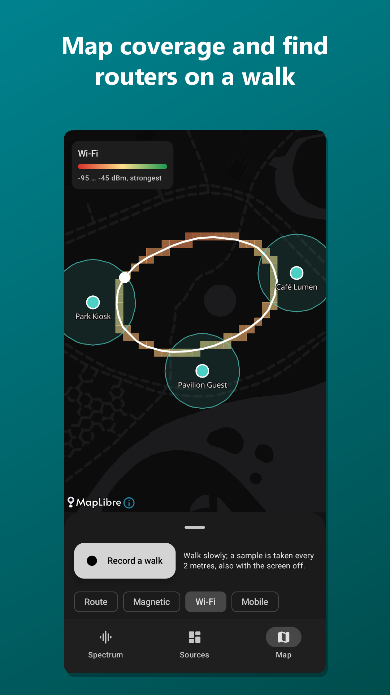

Wi-Fi
Networks on 2.4, 5 and 6 GHz, a channel graph to spot congestion, and the live signal of your own network.
Your phone is surrounded by Wi-Fi, mobile networks, satellites, Bluetooth, magnetic fields and even sound you can't hear. Wavescope shows them live, and explains what each one is.

Wavescope reads your phone's own sensors and radios. No extra hardware needed.

Networks on 2.4, 5 and 6 GHz, a channel graph to spot congestion, and the live signal of your own network.

Your 4G/5G cell, its band and frequency, signal quality, neighbouring cells and the distance to the tower.

GPS, Galileo, GLONASS and BeiDou on a live sky plot, with the frequencies they use.

Devices and beacons nearby, recognised by type, on a proximity radar.

Record a walk and see heatmaps of Wi-Fi, mobile signal and magnetic anomalies, plus where routers and towers probably are. Export as GPX, CSV or GeoJSON.
No account, no ads, no analytics. Every measurement and every walk stays on your phone. The only thing Wavescope downloads is map tiles, and nothing leaves your phone unless you share a walk yourself.
Read the privacy policyAndroid 12 or newer. What Wavescope can show depends on your phone's hardware: not every phone has 6 GHz Wi-Fi, NFC or a dual-frequency GPS, for example. Screens for missing hardware say so.
No. Wavescope shows what your phone's own radios and sensors report, to learn and explore. It is not a calibrated measuring instrument or a health device.
Android only shares Wi-Fi, mobile-cell and satellite details with apps that have location access. Wavescope also uses location to place recorded walks on the map. It all stays on your phone.
It's a passion project. There will be an optional way to support development, but nothing in the app is locked behind a payment.